Pe primul loc se afla Avatar cu $2,787,965,087 incasari in anul 2009

Pe locul al 2-lea se afla Titanic cu $2,187,463,944 incasari in anul 1997
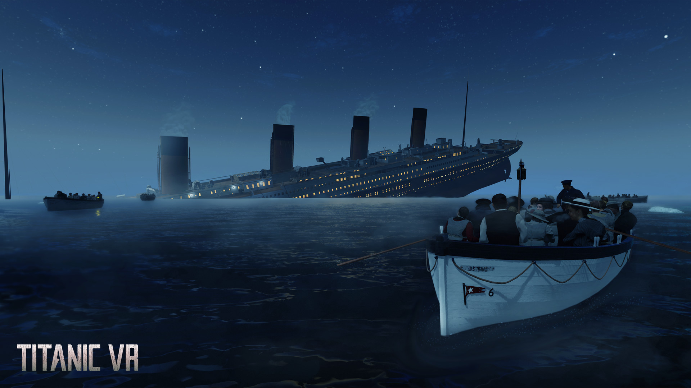 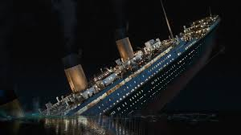 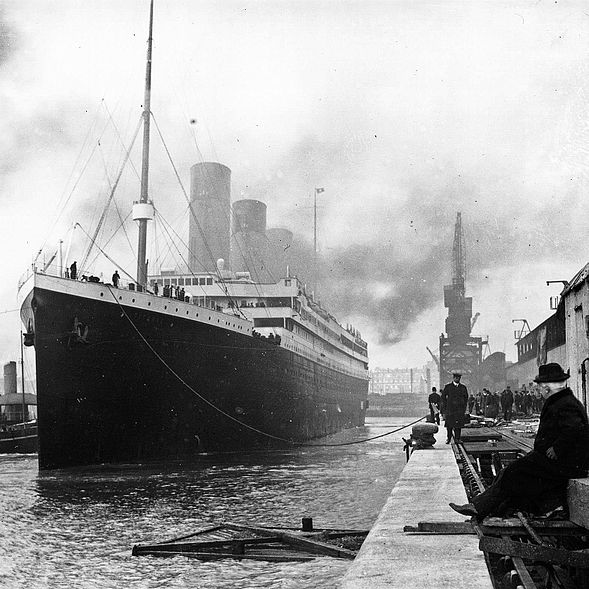Pe locul al 3-lea se afla Star Wars: The Force Awakens cu $2,068,223,624 incasari in anul 2015
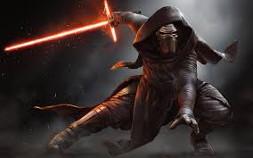Pe locul al 4-lea se afla Avengers: Infinity War cu 2,046,626,158 incasari in 2018
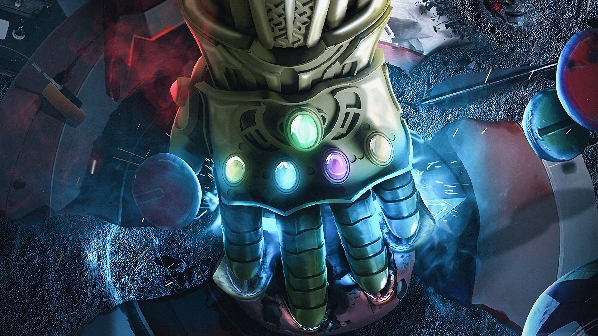 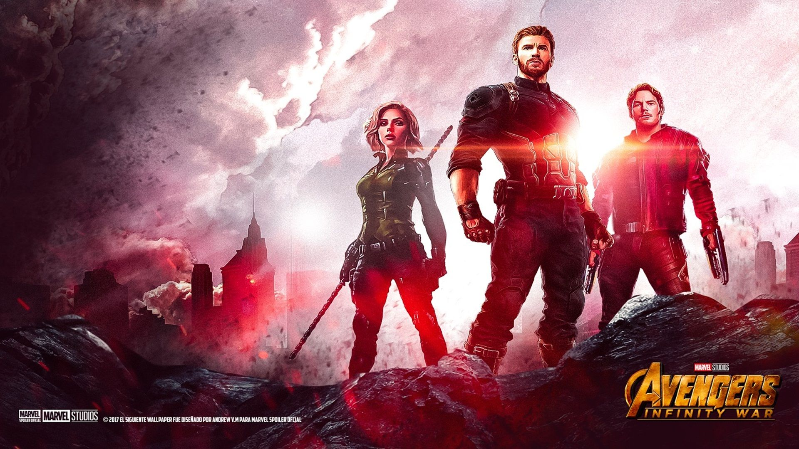
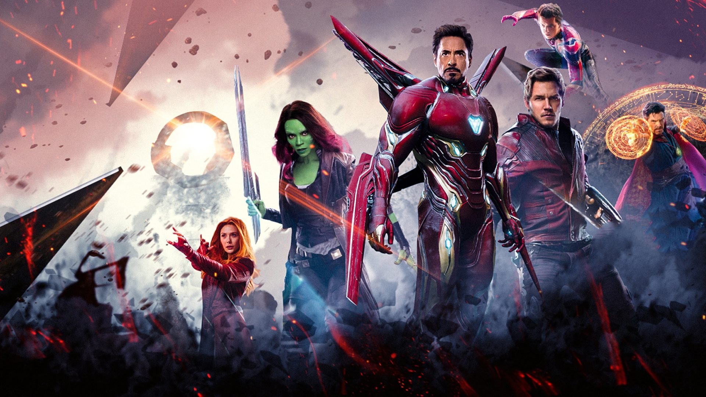
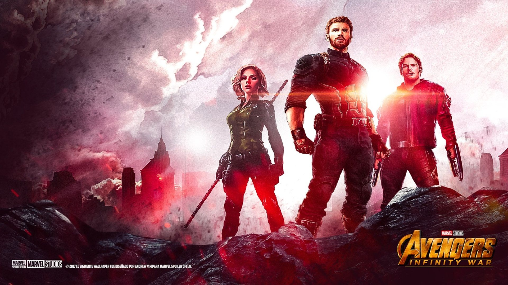
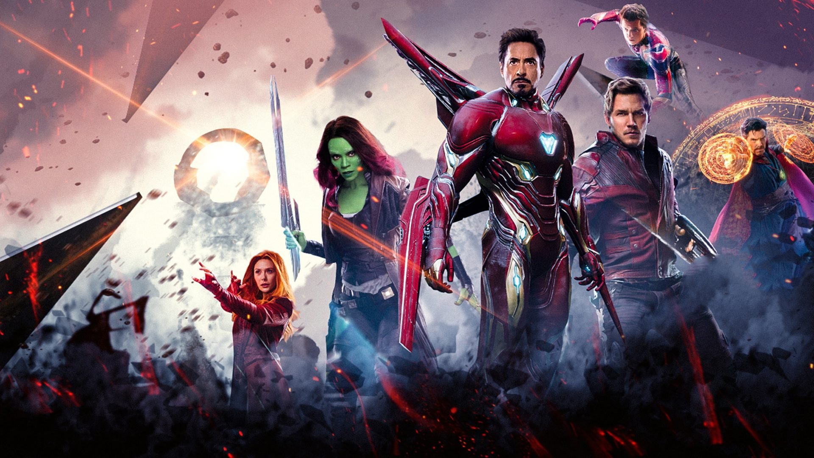
Pe ultimul loc din acest top se afla Jurassic World cu $1,671,713,208 incasari in anul 2015
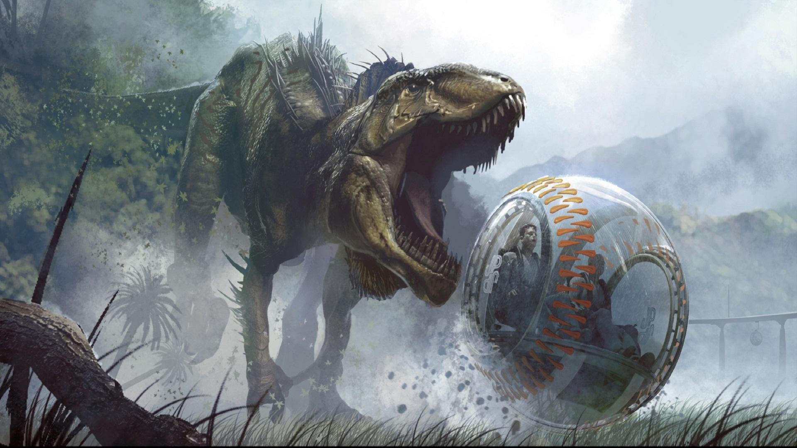 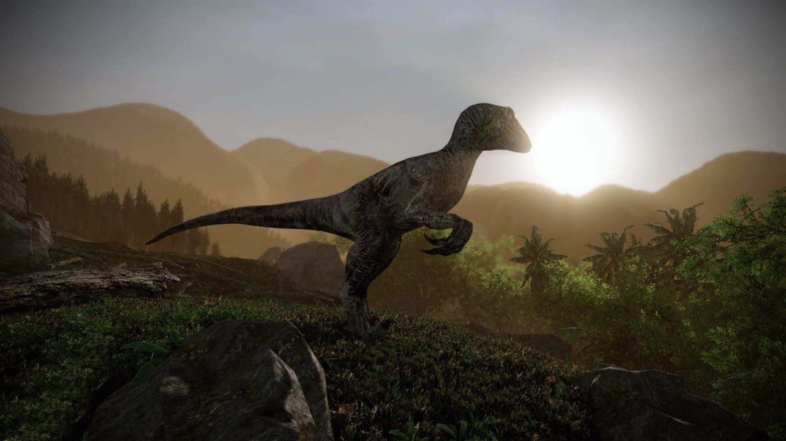 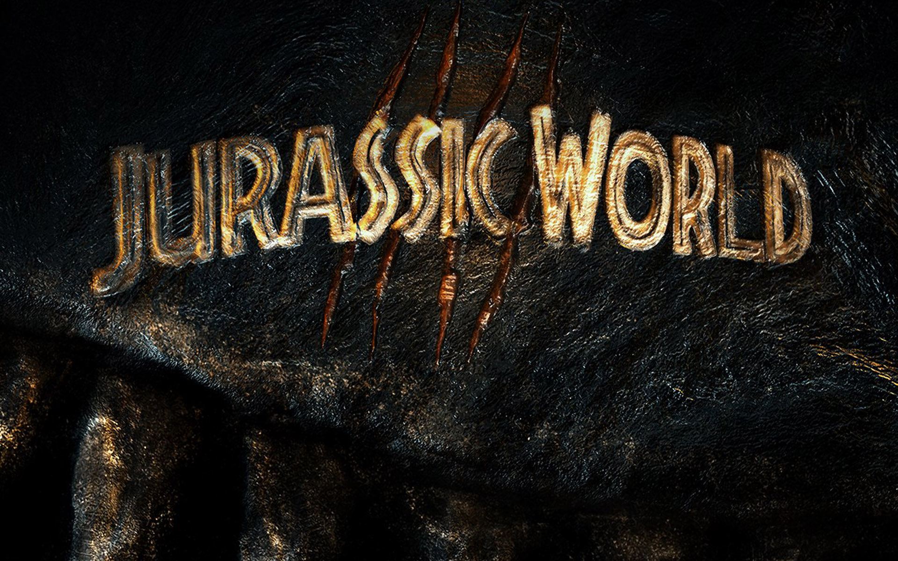 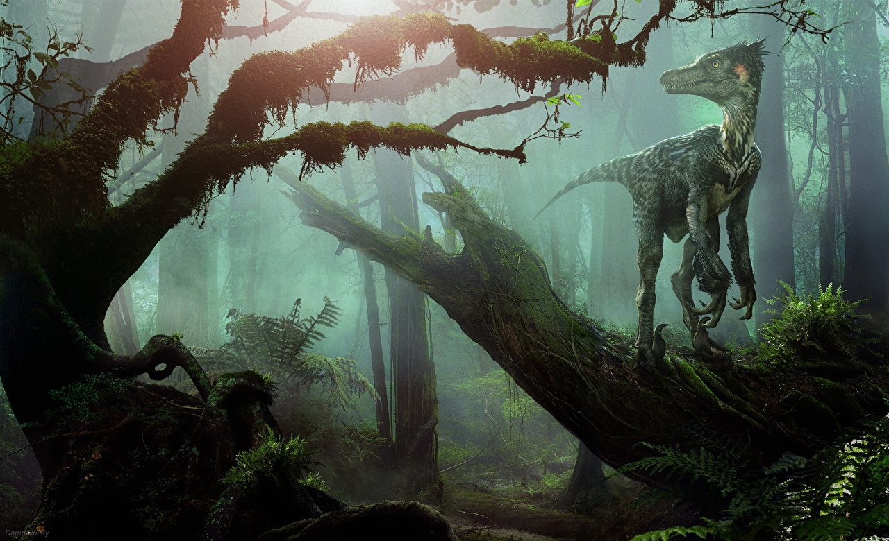